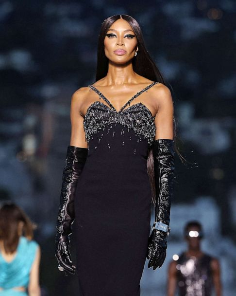

A exposição V&A de Naomi Campbell é um tributo de grande sucesso a uma carreira espetacular - e singular - na moda
POR LAURA HAWKINS


"Não era sobre mim. Era sobre as roupas. Essa é uma afirmação de Naomi Campbell, que - à luz do assunto da última exposição de moda do V&A - não segue exatamente em frente. Nos últimos anos, o museu de South Kensington obteve um sucesso recorde com retrospectivas dedicadas a designers lendários (ver "Gabrielle Chanel. Fashion Manifesto" de 2023/2024 e
"Christian Dior: Designer of Dreams" de 2019), mas nunca antes o dedicou uma exposição para uma única modelo, cujo sucesso na adolescência foi tão meteórico - e cuja criação de imagens é tão icônica - ela é chamada apenas pelo primeiro nome.